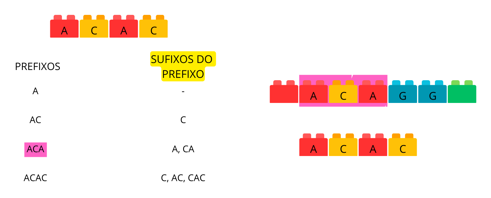
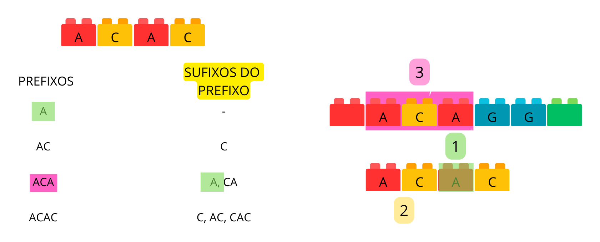
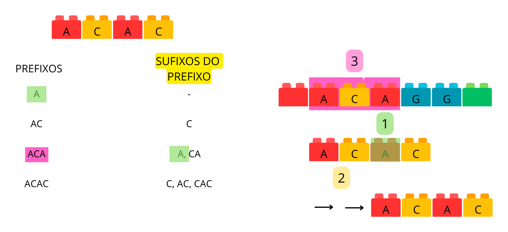
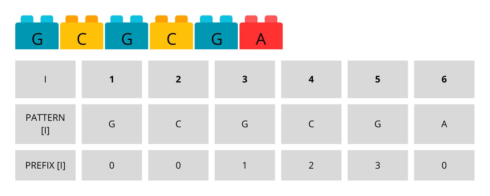
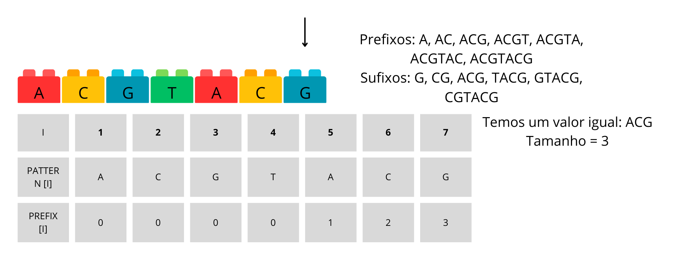
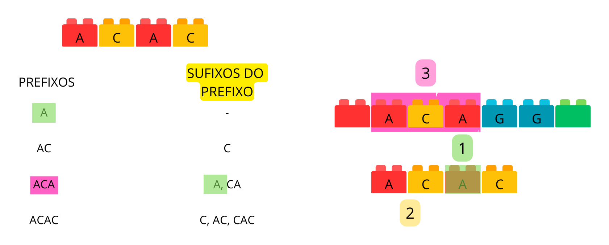
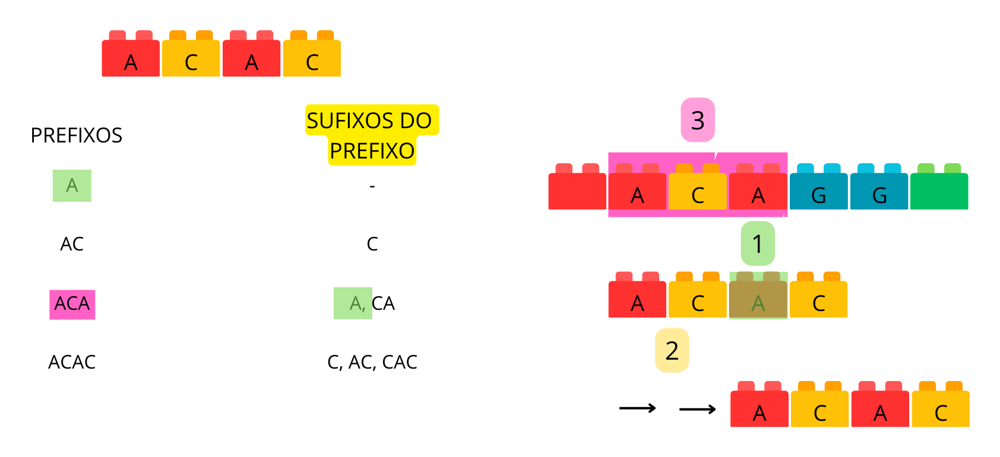
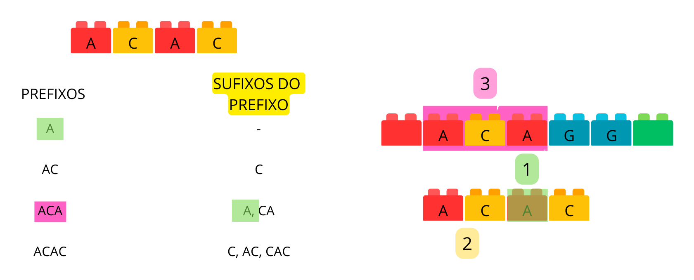
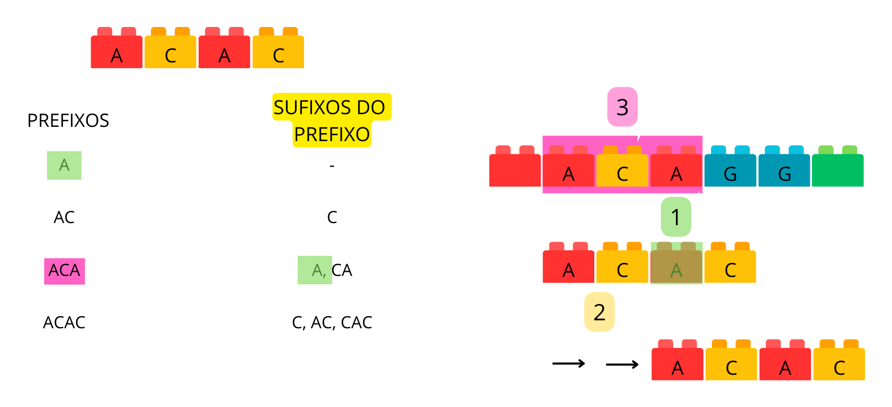
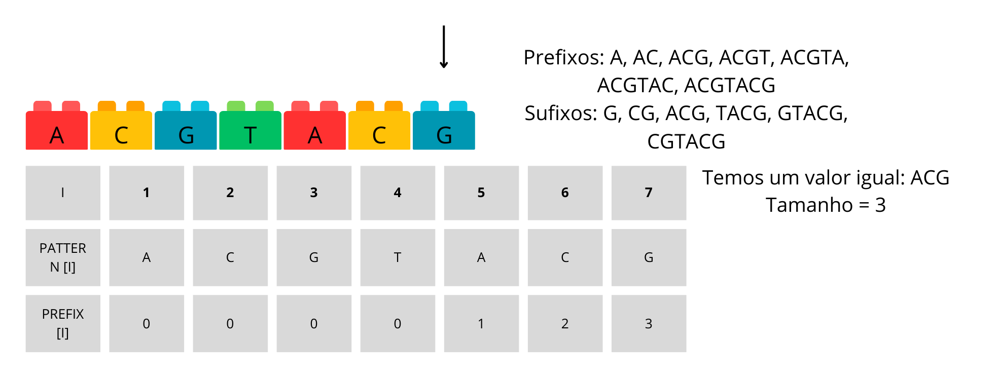

É uma das soluções mais eficientes para o problema de correspondência de padrões em uma string.
Desenvolvido em 1977 pelos pesquisadores Donald Knuth, James Morris e Vaughan Pratt
Utilizado em áreas como Processamento de Linguagem Neural, Ánalise de Dados e Bioinformática
Essência do KMP
O algoritmo KMP inicia comparando caractere por caractere do padrão com o texto.
Se ocorre um mismatch, o KMP usa a lógica de sufixos de prefixos para otimizar a busca, não necessariamente recomeçando as comparações do zero.
Uma tabela de falha, utilizada para determinar saltos, é construída como consequência da lógica de sufixos de prefixos, facilitando a busca de padrões.
=
=
=
=
=
=
=
=
=
=
=
=
=
=
=
=
=
=
=
=
=
=
=
Vantagens do Algoritmo
Eficiência: Evita comparações desnecessárias, resultando em um processo de busca mais rápido.
Utilização da tabela: A tabela auxilia no cálculo dos saltos, otimizando a localização dos padrões.
Handout
Agora podem tanto fazer individualmente quanto em grupo…
…e discussões em grupo podem de fato fazer diferença…
…mas, em algum momento, é importante fazer individualmente.
Se há gabarito, veja só em último caso.
Observações
Aprendizado ativo é fazer, não ler.
Exceto em um ou outro caso excepcional, uma atividade é possível sem consulta além do material de aula dado até o momento.
Além disso, muitas vezes a resposta da atividade é necessária para a compreensão do restante.
Ou seja, “deixar para entender depois” não faz sentido. “Depois” depende de “entender”.
1.O Problema da Busca de Substrings
A busca de substrings é um problema comum em ciência da computação. A questão é: dado um texto e um padrão, podemos encontrar todas as ocorrências do padrão dentro do texto?
A solução mais simples, mas também a mais lenta, é verificar cada substring do texto em sequência para ver se ela corresponde ao padrão, a chamada força bruta. No entanto, essa abordagem é muito ineficiente, especialmente para textos longos, já que o número de comparações feitas será muito grande.
Então como podemos melhorar a eficiência em comparações de strings?
Felizmente, existem algoritmos mais rápidos. O Algoritmo de Knuth-Morris-Pratt (KMP) é um desses algoritmos. Em vez de se mover um caractere por vez, como na busca de padrões convencional, ele permite que você “pule” partes do texto com base no conhecimento adquirido até o momento.
2.Compreendendo os Prefixos e Sufixos de Prefixos
No contexto do algoritmo KMP, prefixos são partes iniciais do padrão. Para o padrão “ABCDE”, os prefixos são “A”, “AB”, “ABC”, “ABCD”, excluindo-se a própria string original.
Checkpoint 1
a) Quais são os prefixos da palavra “DESPROG”?
b) Quantos prefixos existem? Descreva o processo de como você chegou a essa resposta.
Gabarito
a) Os prefixos da palavra “DESPROG” são “D”, “DE”, “DES”, “DESP”, “DESPR”, “DESPRO”.
b) Existem 6 prefixos. Para encontrar esses prefixos, começamos do primeiro caractere e vamos adicionando um caractere de cada vez até chegar ao penúltimo.
Um sufixo de prefixo é qualquer sufixo que pode ser extraído de um prefixo do padrão. No caso do prefixo “ABC”, temos dois sufixos: “BC” e “C”.
Checkpoint 2
Quais são os sufixos possíveis para cada prefixo da palavra “DESPROG” que você encontrou no checkpoint 1?
Gabarito
Os sufixos de cada prefixo são os seguintes: “D”: nenhum sufixo “DE”: “E” “DES”: “ES”, “S” “DESP”: “ESP”, “SP”, “P” “DESPR”: “ESPR”, “SPR”, “PR”, “R” “DESPRO”: “ESPRO”, “SPRO”, “PRO”, “RO”, “O”
Mas por que precisamos saber sobre prefixos e sufixos?
Vamos dizer que estamos procurando o padrão “ABCABC” dentro de um texto e encontramos um match parcial - “ABCAB”, mas o próximo caractere no texto é “D”, não “C”. Isso significa que temos um mismatch. Em um algoritmo de busca normal, começaríamos a busca novamente a partir do próximo caractere.
No entanto, o algoritmo KMP faz algo mais inteligente. Ele observa o match parcial (“ABCAB”) e verifica se há algum sufixo deste match parcial que corresponda a um prefixo do padrão original. Neste caso, “AB” no final de “ABCAB” é um sufixo do match parcial e também um prefixo do padrão original “ABCABC”. Isso significa que podemos “saltar” para o próximo local no texto que alinha este sufixo “AB” com o prefixo “AB” do padrão original na próxima etapa da busca, pois já sabemos que a parte “AB” é uma correspondência válida.
Assim, em vez de mover um caractere de cada vez, o algoritmo KMP pode mover vários caracteres de uma vez, tornando a busca muito mais eficiente. Essa é a ideia central do algoritmo KMP.
3.Funcionamento do KMP
Vamos dar um passo a passo de como o algoritmo KMP executa um “salto” durante a busca de um padrão em um texto. Para isso, vamos considerar o padrão “ACAC" e supor que estamos procurando por ele em um texto.

Passo 1: Iniciamos a busca do padrão (“ACAC”) no texto, começando do primeiro caractere de ambos.
Passo 2: Comparamos os caracteres um a um. Suponha que encontramos um match parcial “ACA”, mas o próximo caractere do texto não é o esperado, então temos um desajuste.
Passo 3: Agora, em vez de começar a busca do zero, olhamos para o match parcial “ACA”. Procuramos o maior sufixo deste match que também é um prefixo do padrão. Neste caso, é “A”. Este sufixo tem um comprimento de 1.
Passo 4: O tamanho do padrão é 3. Então, subtraímos o tamanho do sufixo do prefixo (1) do tamanho do padrão (3), o que nos dá um “salto” de 2 posições.
Passo 5: Movemos a busca para a frente no texto de maneira que este sufixo “A” do texto se alinhe com o prefixo “ACA” do padrão. Isso significa que pulamos a busca para duas posições à frente.
Passo 6: Continuamos a busca a partir desta posição, ou seja, continuamos a partir do caractere seguinte ao “A” no texto e no padrão.
Este processo de “salto” otimiza a busca, pois evita começar do início toda vez que encontramos um desajuste. Em vez disso, usamos a informação que já temos (o match parcial) para pular para uma posição que ainda tem chance de resultar em um match completo. Isso torna a busca muito mais eficiente.
4.A tabela LPS
A tabela LPS é uma representação pré-computada (cache) que armazena informações sobre cada prefixo do padrão e o tamanho do maior sufixo desse prefixo que também é um prefixo. Esse tamanho é usado como um índice que indica quantos caracteres a palavra ou frase deve avançar.
Agora que aprendemos, vamos fazer alguns exercícios para fixar o conteúdo.
Exercício 1
Construa a tabela de prefixos e sufixos para:
GabaritoGabarito Detalhado
Exercício 2
Construa a tabela de prefixos e sufixos para:
GabaritoGabarito Detalhado
Exercício 3
Construa a tabela de prefixos e sufixos para:
GabaritoGabarito Detalhado

5.Pulo com a tabela
Com a compreensão adequada da mecânica do algoritmo e a construção da tabela LPS, é possível apreender integralmente o funcionamento do algoritmo Knuth-Morris-Pratt.
6.Implementação em C
Como explicado nesse handout, o KMP utiliza a tabela LPS como um cache. Ou seja, antes de aplicar o algoritmo de fato, devemos gerar essa tabela.
Implementação da função que monta a tabela
Nesse passo iremos implementar uma função que irá receber o padrão a ser encontrado, o tamanho do padrão e o vetor que será a tabela LPS.
A ideia para montar essa tabela já foi explicada por passos no handout, porém para facilitar a implementação em C, primeiro vamos mostrar
um pseudocódigo.
Pseudocódigo
Lembrando que a assinatura da função é algo parecido com gerar_tabela_LPS(char *padrão, int n, int *lps).
Muito bem, agora vamos ao pseudocódigo de fato.
Definir o comprimento como zero
Definir o primeiro elemento do array de prefixo como zero
Definir "i" como 1
Enquanto "i" for menor que o tamanho do padrão:
Se o i-ésimo caractere do padrão é igual ao caractere no índice de "comprimento" do padrão:
Incrementar o comprimento
Definir o i-ésimo elemento do array de prefixo como o comprimento
Incrementar "i"
Senão:
Se o comprimento não é zero:
Definir o comprimento como o valor no índice "comprimento - 1" do array de prefixo
Senão:
Definir o i-ésimo elemento do array de prefixo como zero
Incrementar "i"
Aviso
Procure entender bem o pseudocódigo dessa função.
Pergunta
Agora que você já entendeu bem, como ficaria a implementação da função que calcula a tabela
LPS em C?
Resposta
Aviso
Lembre-se que essa função não retorna nada, só escreve no array que teve seu endereço passado como argumento da função.
void gera_tabela_lps(char *padrão, int n, int *lps) {
int tamanho = 0;
lps[0] = 0;
int i = 1;
while (i < n) {
if (padrão[i] == padrão[tamanho]) {
tamanho++;
lps[i] = tamanho;
i++;
} else {
if (tamanho != 0) {
tamanho = lps[tamanho - 1];
} else {
lps[i] = 0;
i++;
}
}
}
}
Implementação do KMP
Bem, agora que já temos a função que calcula a tabela LPS podemos, finalmente, aplicar o algoritmo KMP. mas antes, como de costume,
vamos ao pseudocódigo.
Pseudocódigo
A função do KMP deverá receber como argumento apenas o texto e o padrão que queremos buscar nesse texto.
Dado isso, o pseudocódigo fica assim:
Função para buscar o padrão no texto (texto, padrão):
Definir M como o tamanho do padrão
Definir N como o tamanho do texto
Criar um array lps de tamanho M
Chamar a função para calcular o array de prefixo (padrão, M, lps)
Definir "i" e "j" como zero
Enquanto "i" for menor que N:
Se o j-ésimo caractere do padrão é igual ao i-ésimo caractere do texto:
Incrementar "j"
Incrementar "i"
Se "j" for igual a M:
índice é igual a (i - j). E o padrão foi encontrado nesse índice.
Se "j" não é zero:
Definir "j" como o valor no índice "j - 1" do array lps
Senão, se "i" for menor que N e o j-ésimo caractere do padrão não é igual ao i-ésimo caractere do texto:
Se "j" não é zero:
Definir "j" como o valor no índice "j - 1" do array lps
Senão:
Incrementar "i"
Pergunta
Agora que você já viu e entendeu o pseudocódigo, como fica a implementação do KMP em C?
Resposta
void KMP(char *texto, char *padrao) {
int M = strlen(padrao);
int N = strlen(text);
int lps[M];
gera_tabela_lps(padrao, M, lps);
int i = 0;
int j = 0;
while (i < N) {
if (padrao[j] == text[i]) {
j++;
i++;
}
if (j == M) {
printf("Padrão encontrado no índice: %d\n", i - j);
j = lps[j - 1];
} else if (i < N && padrao[j] != text[i]) {
if (j != 0) {
j = lps[j - 1];
} else {
i = i + 1;
}
}
}
}
Você deve ter percebido que nesse código há o uso da função strlen que vem da biblioteca, string, por isso não esqueça de incluir
no seu código.
#include <stdio.h>
#include <string.h>
Lembrando que essa função foi usada apenas para facilitar as coisas, você já fez muitos “whiles” em C durante o semestre, se podemos poupar de dois
por que não fazer, não é?
Aviso
Essa função não retorna nada, porém ela poderia ser facilmente modificada para retornar um inteiro com o índice de onde a ocorrência foi encontrada.


 



